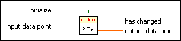

Value Has Changed PtByPt VI
Owning Palette: Other Functions PtByPt VIs
Requires: Full Development System
Detects changes of input data point between the current call and the previous call to the Value Has Changed PtByPt VI.
 | Note By default, reentrant execution is enabled in all Point By Point VIs. |

 Add to the block diagram Add to the block diagram |
 Find on the palette Find on the palette |